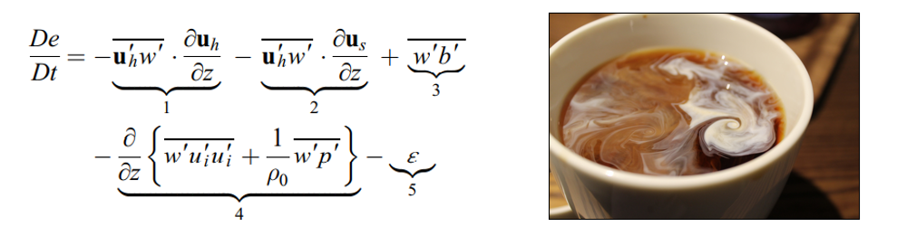

About me
Hello! I am a physical oceanographer and PhD candidate at the Lamont-Doherty Earth Observatory of Columbia University who uses observational data to study surface ocean processes.
Ph.D., Ocean and Climate Physics, Expected 2022
M.Phil., 2020
M.A., 2018
Columbia University, New York, New York
Advisor: Christopher J. Zappa
University of Washington, Seattle, Washington
Advisor: H. Paul Johnson
Research
High salinity shelf water (HSSW) in the Terra Nova Bay polynya
I am funded by a NASA FINESST grant to characterize high salinity shelf water (HSSW) formation in Terra Nova Bay, Ross Sea, Antarctica using mooring data, meteorological measurements, and satellite sea ice concentration products. HSSW is a major component of Antarctic Bottom Water, a water mass that fills the lowest kilometer of the world’s oceans and is important to our understanding of past and future climate. HSSW is formed in coastal polynyas, which are openings in the sea ice created by strong winds known as katabatic winds.
Scaling moored turbulence measurements in the STRATUS region upper ocean
The southeast Pacific Ocean off the coast of Peru and northern Chile is known for its relatively cold sea surface temperatures and persistant stratus cloud cover. It is poorly captured by climate models, leading to errors in the earth's simulated radiation budget and climate sensitivity. To contribute towards a better understanding of upper-ocean processes in this region, and therefore its improved representation in models, we use moored measurements of turbulence kinetic energy dissipation rate to examine major production sources and the applicability of various similarity scalings in approximating the measured values. Turbulence in the ocean mixes gasses, heat, salt, and nutrients, like milk in a coffee cup. Below is the turbulence kinetic energy budget with 1. wind-forced production 2. wave-forced production 3. convective production/buoyant suppression 4. eddy transport 5. molecular dissipation into heat Publications and Presentations
Zippel, S, J. T. Farrar, C. J. Zappa; U. K. Miller , L. St. Laurent, T. Ijichi, R. A. Weller; L. McRaven; D. Le Bel. (2021). TKE Dissipation Rate Estimates from Pulse-Coherent ADCPs on Moorings . Journal of Atmospheric and Oceanic Technology
Miller, U. , C. J. Zappa, S.T. Yoon, C. Stevens, W.S. Lee, A. Gordon (2020), A high-resolution process study of High Salinity Shelf Water formation in the Terra Nova Bay Polynya, Ross Sea, Antarctica, Abstract GC116-0001 presented at 2020 Fall Meeting, AGU, Online, 1-17 Dec.
Miller, U. , C. J. Zappa, J. T. Farrar, D. LeBel, R. A. Weller (2020), Scaling turbulence in the ocean boundary layer of the Southeast Pacific Ocean stratus region, Abstract PS11A-03 presented at Ocean Sciences Meeting 2020, San Diego, CA, 16-21 Dec.
Wurl, O., K. Bird, M. Cunliffe, W. M. Landing, U. Miller, N. I. H. Mustaffa, et al. (2018). Warming and inhibition of salinization at the ocean's surface by cyanobacteria. Geophysical Research Letters , 45, 4230–4237.
Johnson, H. P., U. Miller, M. S. Salmi, E. A. Solomon, (2015). Analysis of bubble plume distributions to evaluate methane hydrate decomposition on the continental slope. Geochemistry, Geophysics, Geosystems , 16, 3825-3839. Hautala, S. L., E. A. Solomon, H. P. Johnson, R. N. Harris, U. Miller (2014). Dissociation of Cascadia margin gas hydrates in response to contemporary ocean warming . Geophysical Research Letters , 41, 8486-8494.Outreach
Some things I've been involved in are the development of a curriculum for PyClub, an effort to introduce local high school students to coding in python through oceanography, Girls Who Code @ Columbia University , LDEO Open House and Girls' Science Day at Columbia . I really enjoy showing young people that science and coding is not just for "geniuses" or solemn-faced men clad in white lab coats!To see the lesson on the python Pandas package I developed for PyClub, click here
To see a silly video about life on oceanographic research cruises I made for Open House 2020 using media that my friends and I have collected while out at sea, click here